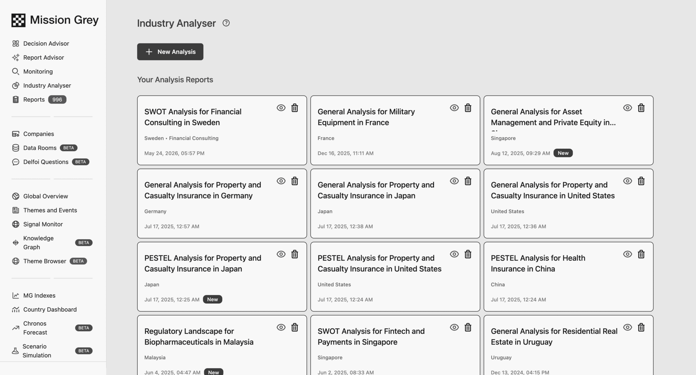
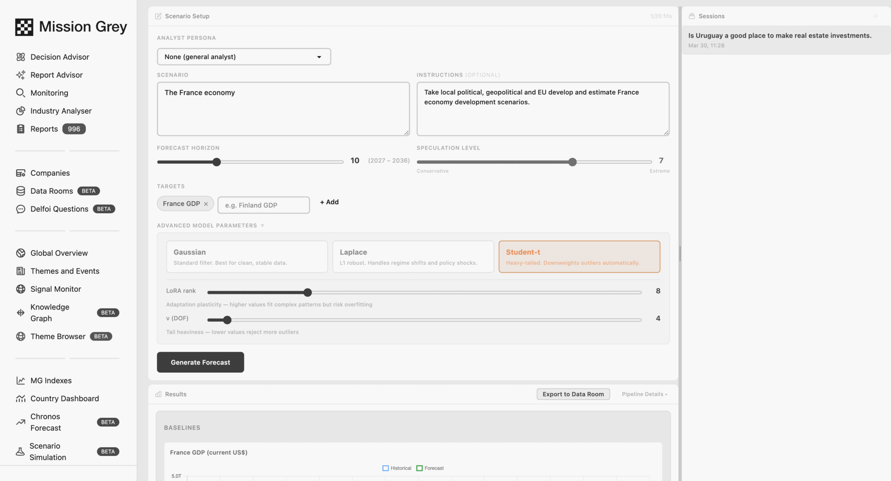
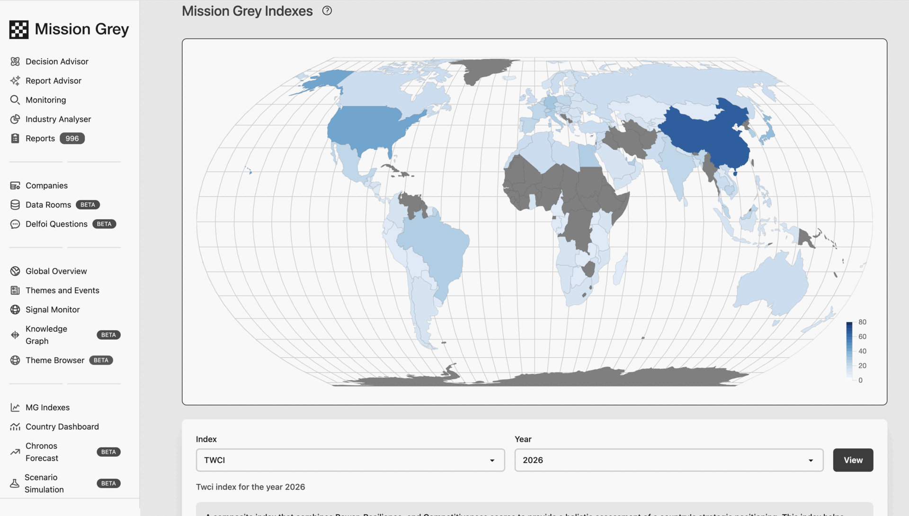

Signal monitoring
Track external developments from global to local, across regulation, markets, technology, supply chains and physical‑world data.
External intelligence platform · Access by request
Mission Grey connects global and local developments, from markets, regulation and politics to technology, financing, consumer behavior and operational conditions, to the decisions your organization needs to make. Continuous intelligence, quantitative models, AI and expert judgment show what changed, what it means for you, what may happen next, and what to do.

External intelligence
Global to local, macro to micro
External intelligence is everything outside your organization that can change a decision. One decision can depend on every level at once.
01Global
02Markets and industries
03Local
04Your organization
One decisionBuilt from every level that bears on it.
Reading one local investment market can take interest rates and financing conditions, local regulation and permits, tenant and customer behavior, costs, economic development, local politics, national policy, and the macroeconomic picture around all of it. Mission Grey assembles that context around the decision rather than leaving it scattered across sources.
The system
Monitor · Analyze · Decide · Act
Continuous monitoring, structured analysis, decisions held as a standing structure, and delivery into the places where your organization already works. Each stage is visible, each output can be traced back through the one before it, and the screens along the way are the product itself.
01 · MONITOR
Signals collected around the clock across regulation, markets, economic indicators, technology, competitors, political developments, consumer behavior, supply chains and local market conditions, alongside company activity, specialist sources and physical‑world data.
INPUT THE WORLDOUTPUT SIGNAL

02 · ANALYZE
A signal only matters in context. Mission Grey connects what it sees to your exposure: the entities involved, their relationships and history, the markets they sit in, and the assumptions your organization already holds. A knowledge graph keeps that structure persistent, quantitative models carry the numbers, and Guild experts weigh in where context decides the answer.
INPUT SIGNALOUTPUT ASSESSMENT


Report Advisor writes the recurring report and cites it: every claim carries a numbered source, and each edition states what changed since the last one.

Industry Analyser runs a repeatable structure over a market: SWOT, PESTEL, regulatory landscape, by country and industry, so two analyses can be compared.
03 · DECIDE
Scenarios set out what could happen and what you would do about it, with the forecasts and indexes that give each scenario numbers to stand on. The decision itself is held as a standing structure, laid out in the next section, so it keeps updating after the answer has been given.
INPUT ASSESSMENTOUTPUT DECISION


Quantitative forecasting beyond language models. The horizon, the target series and the model assumptions are set explicitly, and a different assumption gives a different forecast you can see.

Composite indexes turn qualitative country and market conditions into numbers that move, so an indicator can carry a threshold and a threshold can carry a trigger.
04 · ACT
Analysis that stops at analysis changes nothing. Intelligence arrives as reports and executive briefings, dashboards and alerts, role‑specific and customer‑specific applications, and agents that route what changed to the person who owns it. The API and workflow integrations carry the same intelligence into the systems your organization already runs.
INPUT DECISIONOUTPUT ACTION
Vessel tracking shows sustained diversion on a corridor both suppliers depend on. Cost and delay exposure is concentrated in fourth‑quarter commitments, and the concentration itself is the finding.
Review alternate sourcing before renewal terms close. Reasoning and sources are cited in the full report.
Decision architecture
Trackers, indicators, scenarios, triggers, actions
Five connected objects carry a decision over time. Each one can change the others, which is why the system does not go quiet once an answer has been delivered.
Trackers
What we watch.
Indicators
What we measure.
Scenarios
What could happen, and what we would do.
Triggers
When a decision or action is due.
Actions
What the organization does.
FeedbackWhat you decide changes what we measure next.
Agents read trackers, indicators and scenarios continuously, identify material change, and know who owns the exposure or the decision it touches. They send that person what changed, recommend an action, prepare the workflow, and where explicitly authorized, start a process in a connected system.
One external development can produce different instructions for procurement, treasury, compliance, operations and management. That is the point: not the same alert to everyone.
Check this
Something important changed. A person should look at it.
Do this
An agreed trigger has been reached. A previously defined action is now relevant.
Worked example
An enterprise example
An industrial manufacturer with a plant in one region, two component suppliers in another, and a contract renewal due next quarter. Every element below is illustrative.
01Developments
An export‑control amendment enters its comment period. A shipping lane the plant depends on reroutes. A national election shifts the outlook for an industrial energy subsidy.
02Signals
Each is picked up where it happens, in the regulatory docket, in vessel movement, in the political calendar, and each is linked to the entities this organization is actually exposed to.
03Indicators
Three measures move: delay on the corridor, the share of sourced components inside the proposed control scope, and projected energy cost per unit at the plant.
04Scenario
One scenario holds the three together: the control scope is confirmed while the lane stays diverted and the subsidy lapses, with the response the organization has already agreed to.
05Trigger
Defined in advance: two of the three indicators past their thresholds, with the renewal window still open.
06Action
Procurement prices the alternate lane, treasury reviews the hedge, compliance opens the control assessment, and management sees one view of all three. Each function receives the part that belongs to it.
07Value
The renewal is decided with the alternative priced and the exposure understood, instead of after the disruption arrives. The evidence, the trigger and the decision stay on the record.
The recipe
Why this is not one model
The advantage is not any one dataset, model or AI. It is how they are combined around the decision.
Decision‑worthy intelligence
Mission Grey decision engine
AKnowledge and context
Knowledge Graph, entity relationships, history, macro to micro context, and the connections between events, companies, people, markets, regulation and technology.
BModels and reasoning
LLMs, quantitative and economic models, forecasting, scenario models, fuzzy logic, network approaches, proprietary and university‑developed methods, and agents.
CHuman judgment
The Mission Grey Guild: domain and regional experts, Delphi methods, structured expert surveys, expert validation and local knowledge.
Intelligence base
+Premium and specialist sources
Detailed maritime data, satellite data, commercial databases, paid research, specialist industry datasets.
+Local and niche sources
Regional sources, specialist publications, local experts, structured local observation.
+Customer‑private data
Internal documents and datasets, assumptions, exposures, plans, organization‑specific context.
Start with the intelligence base. Add what the decision requires. Different decisions need different data, so premium, local and private sources are added where a question calls for them rather than by default, and customer‑private information can remain restricted to that customer's environment.
The question determines the data and the method, not the other way around.
General‑purpose AI
Mission Grey
An architectural difference, not a comparison of answers.
Applications
Built on the shared layer
Mission Grey can turn the intelligence layer into applications and dashboards designed around your organization, an industry, a geography, a facility, a process or a single recurring decision. The underlying intelligence, models and evidence stay shared, while each team sees the indicators, scenarios, risks, opportunities and actions relevant to its responsibilities.

A second application follows the same pattern for cleanroom operations, turning external developments into the affected process, the likelihood, the exposure, the mitigation and the recommended action. The application layer sits above the shared intelligence layer and draws on it. It is not a separate product, and it is not a software project run beside the platform.
Capability index
The instrument set, one platform
One platform, thirteen instruments. They share the same intelligence, the same evidence and the same models, which is what lets an answer from one be checked against another.
Track external developments from global to local, across regulation, markets, technology, supply chains and physical‑world data.
Watch a specific issue continuously and detect meaningful change while there is still time to act on it.
Build measures around the decisions your organization actually has to make, then hold them to thresholds.
Model how variables and outcomes may develop, with the modeling assumptions set explicitly rather than hidden.
Explore possible futures, actor behavior and strategic options before committing to one of them.
Understand relationships, dependencies and second‑ and third‑order effects across regions and sectors.
Investigate a specific decision using structured Mission Grey intelligence, with prioritized recommended actions.
Create sourced, recurring intelligence reports that state what changed since the last edition.
Analyze industries, markets and competitive environments in a repeatable structure, by country and sector.
Bring structured Guild insight into the analysis through expert review, surveys and Delphi rounds.
Use private customer information as controlled context for analysis, without it leaving your environment.
Create decision‑ and role‑specific environments on top of the shared intelligence layer.
Connect intelligence to the people who own a decision, to the workflows that carry it out, and to the other systems your organization runs.
Trust architecture
Mission Grey is designed for real decisions. Every signal, interpretation, and recommendation is transparent, traceable, and explainable.
Every signal and input can be linked back to where it came from.
Analysis and recommendations can be reviewed and challenged, by your own team and through the Guild.
The evidence behind a conclusion can be opened and read, not only cited.
Customer data is not resold, and customer‑private information can remain restricted to that customer's environment.
Reports include sources and can be verified, a feature users consistently highlight. Designed for environments requiring transparency, auditability, and accountability.
Human expertise
Machine scale, human judgment
The Mission Grey Guild is a curated network of domain and regional experts. Their judgment enters through expert review, structured surveys and Delphi rounds, so it becomes part of the method rather than a comment on the output.
Who it serves
Strategy, operations, portfolios
STRStrategy & Risk
Monitor external developments and stress‑test strategic options against real‑world scenarios.
Better‑informed leadership decisions with full traceability.
INDIndustrial & Operations
Monitor geopolitical, regulatory, and supply chain risks while supporting market and investment decisions.
Reduce disruption risk and improve strategic decisions.
FINFinancial Institutions
Monitor macro and micro signals affecting real estate, credit, and investment portfolios.
Identify risks earlier and capture opportunities before market shifts.
INSInsurance & Risk
Integrate external intelligence into risk assessment and exposure management.
Improve pricing and deliver higher‑value advisory.
CONConsulting & Advisory
Combine expertise with continuous external intelligence and scenario modeling inside client work.
Deliver faster, more relevant, continuously updated client recommendations.
GOVGovernment
Detect trends and support decisions for economic and strategic development.
Accelerate growth and systemic change.
In operation
Quoted verbatim, names withheld
“We integrated Mission Grey into our quarterly risk review. The first signal saved us a seven‑figure supply chain disruption.”
Director of Risk · European Industrial · name withheld
“We use multiple tools to track developments, but only Mission Grey combines them into a coherent view: real scenarios, full context, and actionable recommendations.”
Head of Market Foresight · Export Agency
“We could assess risks at the level of individual assets and locations. What we lacked was visibility into network effects and second‑ and third‑order impacts. Mission Grey addresses that gap.”
Regional Head · Insurance Company
Why grey
The world does not arrive in black and white. Every consequential decision is made in between, where signals conflict, incentives collide, and certainty is not on offer. The mark is black and white resolving into grey. Mission Grey is the instrument for operating there.
Black and white, resolving into grey
Access
Some decisions depend on what others miss. Mission Grey is an enterprise platform; access is by request.